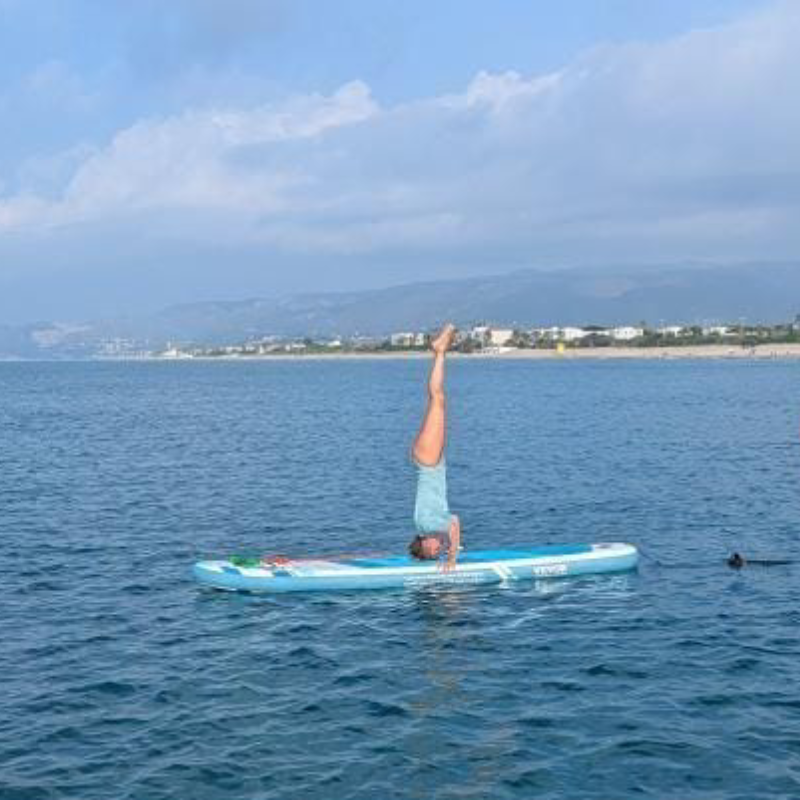

El yoga es mucho más que una simple actividad física. Es una disciplina que conecta cuerpo, mente y espíritu...
En un mundo lleno de prisas, responsabilidades y estrés,
encontrar un momento para reconectar contigo mismo puede marcar una gran diferencia.
La práctica diaria de yoga no solo fortalece tu cuerpo, sino que también transforma tu mente y espíritu.
A continuación, exploramos algunos de los beneficios más notables de incorporar esta disciplina en tu rutina diaria.
Yoga para pricipiantes
Publicado el 30 de septiembre de 2024
Si estás considerando empezar a practicar yoga, ¡felicidades! Estás dando el primer paso hacia una actividad que puede transformar tu cuerpo,
mente y espíritu...
El yoga no se trata de ser flexible o fuerte desde el principio,
sino de embarcarte en un viaje personal hacia el bienestar.
Yoga Flow
Publicado el 05 de noviembre de 2024
Yoga Flow, también conocido como Vinyasa Yoga,
es un estilo dinámico que conecta las posturas con la respiración en un movimiento fluido.
Es ideal para quienes buscan un equilibrio entre el esfuerzo físico y la meditación en movimiento.
En este artículo, exploramos qué es el Yoga Flow, sus beneficios y consejos...
Hatha Vinyasa
Publicado el 15 de noviembre de 2024
Hatha Vinyasa es un estilo de yoga que combina lo mejor de dos mundos:
la estabilidad y alineación del Hatha Yoga con la fluidez y dinamismo del Vinyasa.
Ideal para quienes buscan equilibrio entre esfuerzo físico y relajación mental.
En este artículo, exploramos qué es el Hatha Vinyasa y sus beneficios...
SUP yoga
Publicado el 20 de noviembre de 2024

SUP Yoga, o yoga sobre tabla de paddle surf,
combina la práctica del yoga con la experiencia de estar en el agua.
Esta disciplina no solo mejora el equilibrio y la fuerza,
sino que también te conecta profundamente con la naturaleza.
Merditacion con Cuencos
Publicado el 30 de noviembre de 2024
La meditación con cuencos tibetanos o cuencos de cristal es una práctica ancestral que utiliza vibraciones sonoras para calmar la mente y equilibrar la energía.
Es una herramienta poderosa para alcanzar la relajación profunda y el bienestar espiritual.